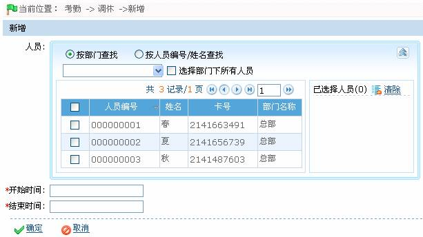

7.6.5 调休
调休功能可以为用户提供灵活的工作/休息时间的调整设置。用户既可以在已经安排了排班的情况下，设置人员为休息（且在考勤时不计旷工）。
-
 新增调休
新增调休
1、单击【考勤】 【调休】，进入调休页面。
【调休】，进入调休页面。
2、单击调休页面上的【新增】按钮，进入新增调休页面：

根据需要进行参数设置，具体设置方法如下：
人员：选择需调休的人员，可多选，人员的选择，请参见附录1 常用操作中的1. 人员选择。
开始时间、结束时间：设置调休的开始和结束的日期与时间，日期与时间的设置方法，请参见附录1 常用操作中的8. 选择日期与时间。
2、设置完成后，单击【确定】按钮，保存并返回调休页面，此时调休列表中将显示刚新增的调休信息。
-
编辑调休
在调休页面，单击调休记录所在行的“相关操作”下的【编辑】按钮，进入编辑调休页面，具体操作同新增调休类似，此处不再复述。
-
删除调休
在调休页面，选中调休信息，点击调休列表左上方的【删除】按钮，或直接点击“相关操作”下的【删除】按钮，进入删除确认页面。单击【确定】按钮，确认删除被选中的调休信息。